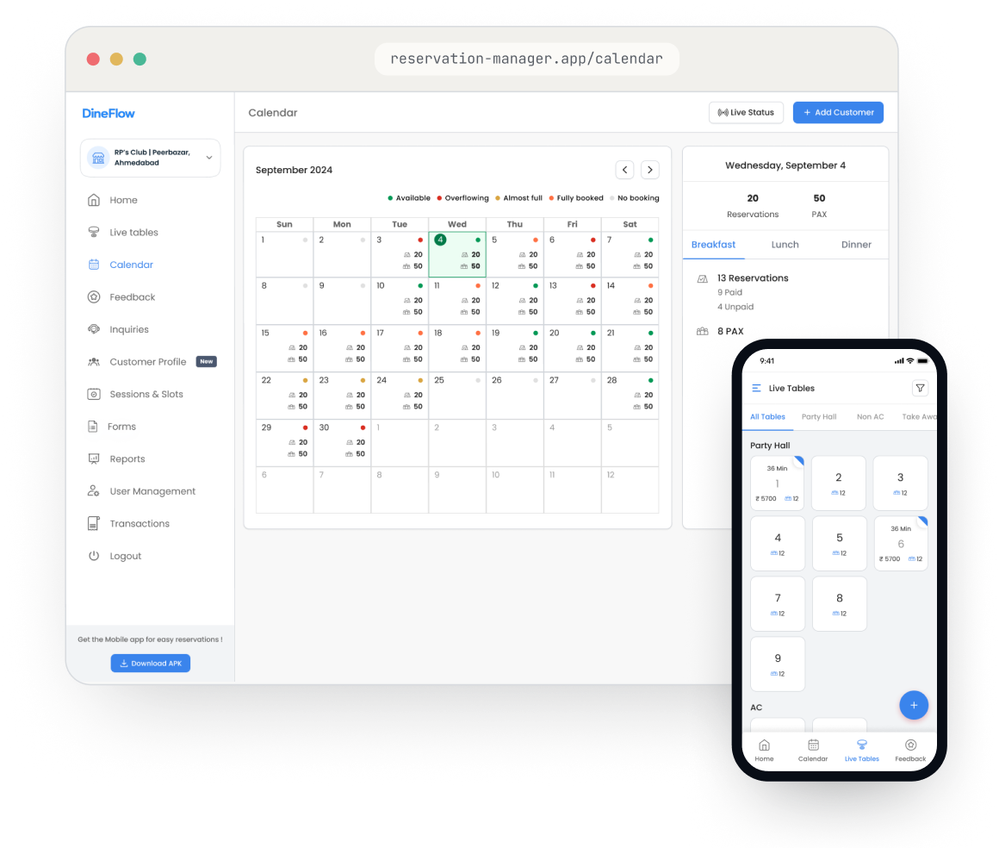
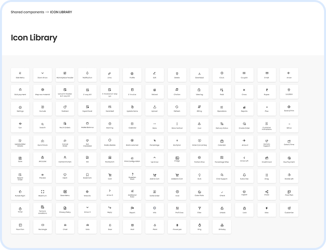
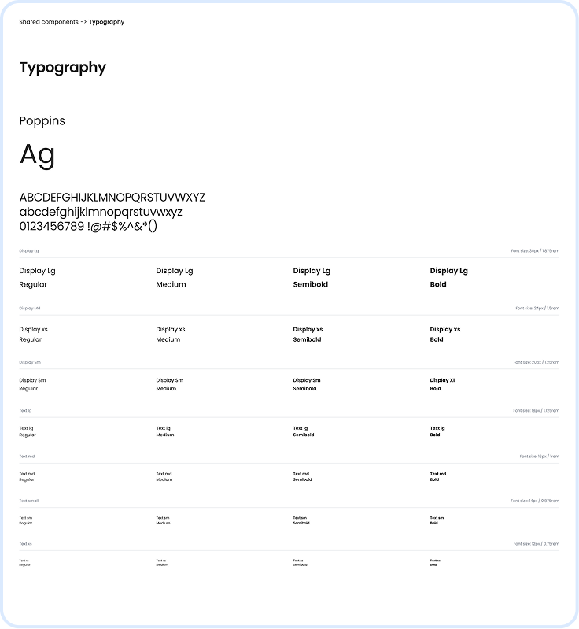
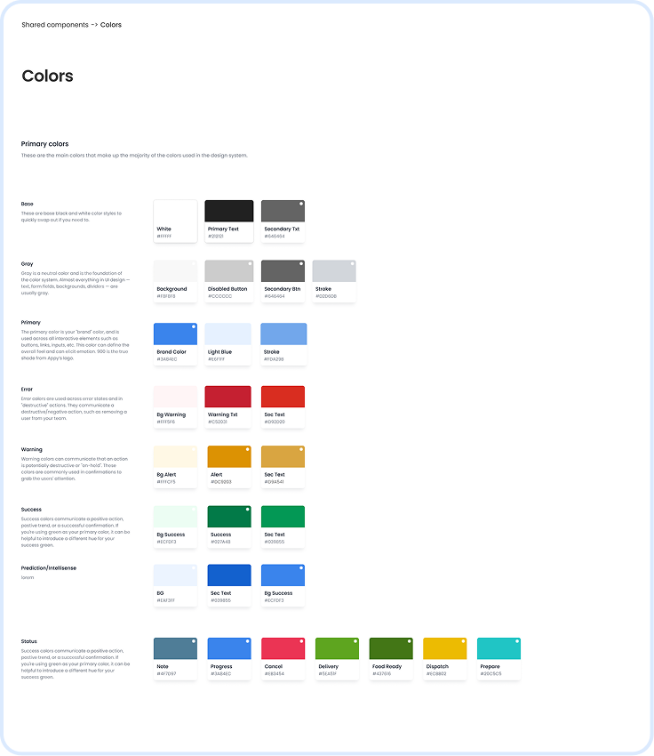
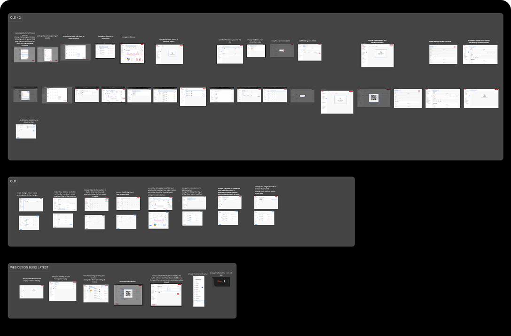
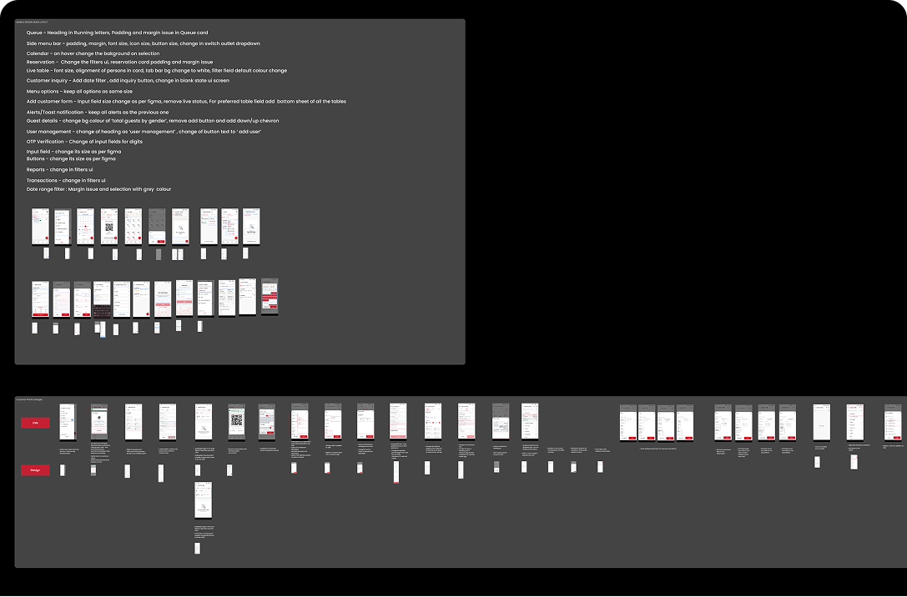
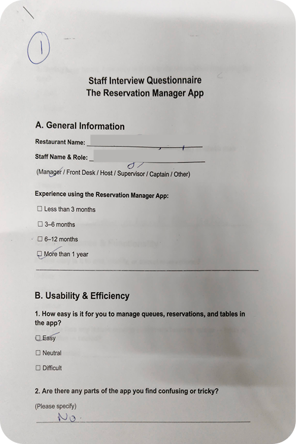
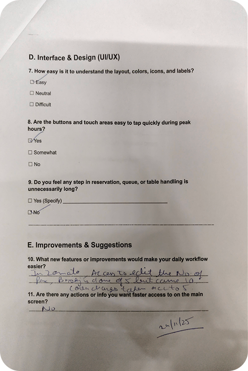
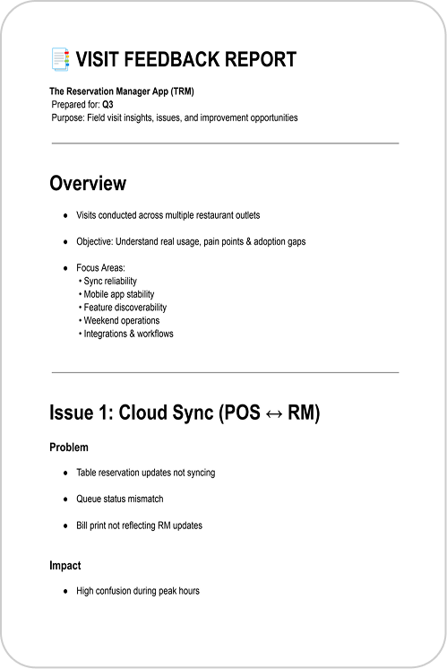
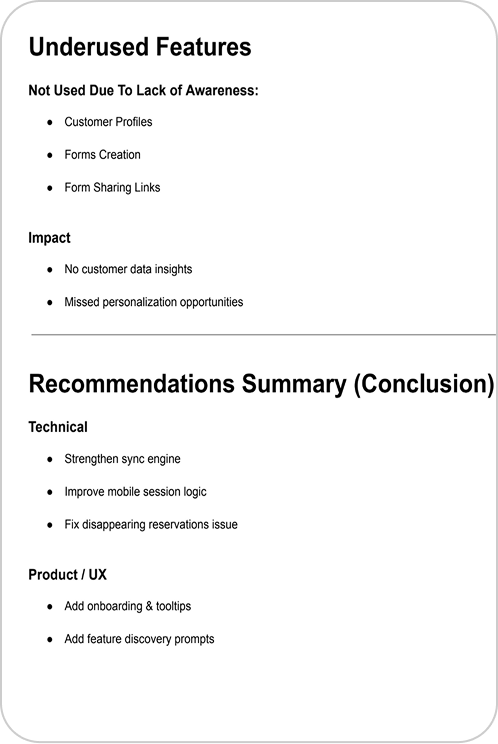

Visibility Problem
Staff needed to know who is booked, queued, served, cancelled, and paid.
Case Study · Product Design
A live operational system that helps F&B outlets manage walk-ins, reservations, queues, live table availability, customer details, incoming customer inquiries, feedbacks, sessions and slots in real time and follow-up actions from one system.
Restaurants were not only taking reservations. They wanted to manage a live operational system with multiple statuses, channels, payments, and edge cases.
Staff needed to know who is booked, queued, served, cancelled, and paid.
Each booking needed reminders, notes, edits, cancellation, table assignment, and source context.
New modules kept getting added, so the IA and components needed stronger structure.
Different roles look at the same product through very different lenses. The design had to serve speed, oversight, and insight — without compromise.
Create bookings, manage queue, call customers, assign tables.
Monitor sessions, capacity, paid bookings, reports, and staff actions.
Visibility into demand, revenue, feedback, and customer history.
Table Reservation Manager is a SaaS product used by F&B outlets across India to manage incoming bookings from multiple sources — Zomato, Dineout, direct calls etc.

The product grew from reservation handling into a larger operational layer connecting channels, queues, tables, payments, forms, and reports.
Walk-ins, Zomato, Dineout, EazyDiner, form entries
Booking cards, sessions, reminders, cancellations
Profile, history, preferences, loyalty
Live status, queue visibility, capacity
Analytics, ratings, transactions, exports
I took ownership of an existing Reservation Manager product and evolved it carefully by understanding live restaurant operations, inherited workflows and stakeholder expectations before designing.




Web App
Mobile App



After restaurant visits and UI/UX audits, my learning shifted from screen-level improvement to understanding how operational products behave in real F&B outlet environments.
Operational UX is not only about clean screens. It is about helping staff act quickly during peak hours, when queue, table, reservation, and customer information must stay understandable at a glance. Speed and clarity beat aesthetics every time in live restaurant operations.
Audits helped me see repeated patterns: unclear labels, missing states, inconsistent hierarchy, weak discoverability, and platform differences can slowly reduce trust in a live product. These aren't one-off bugs — they're signals of structural design debt that needs systematic resolution.
Restaurant visits made the product feel less abstract. Real feedback showed that sync reliability, speed, and confidence in status updates matter more than visual polish alone. Being present in the environment transformed how I prioritized and framed design decisions.